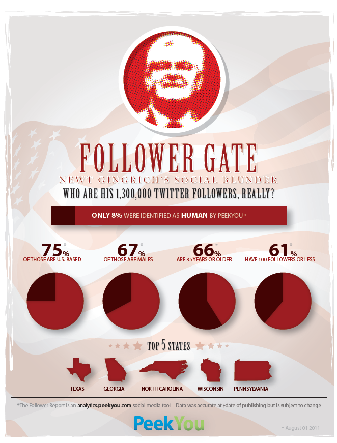

While the shocker headline deals with Newt Gingrich, what’s buried away in PeekYou’s analysis is the disturbing fact that typically only “30-60″ per cent of Twitter Followers in general are real. Coupled with the surprising connectivity provided by spammers and other automated and semi-automated accounts that I found in the #Norway Twitter network, one begins to wonder how much of Twitter and its traffic is human discourse.